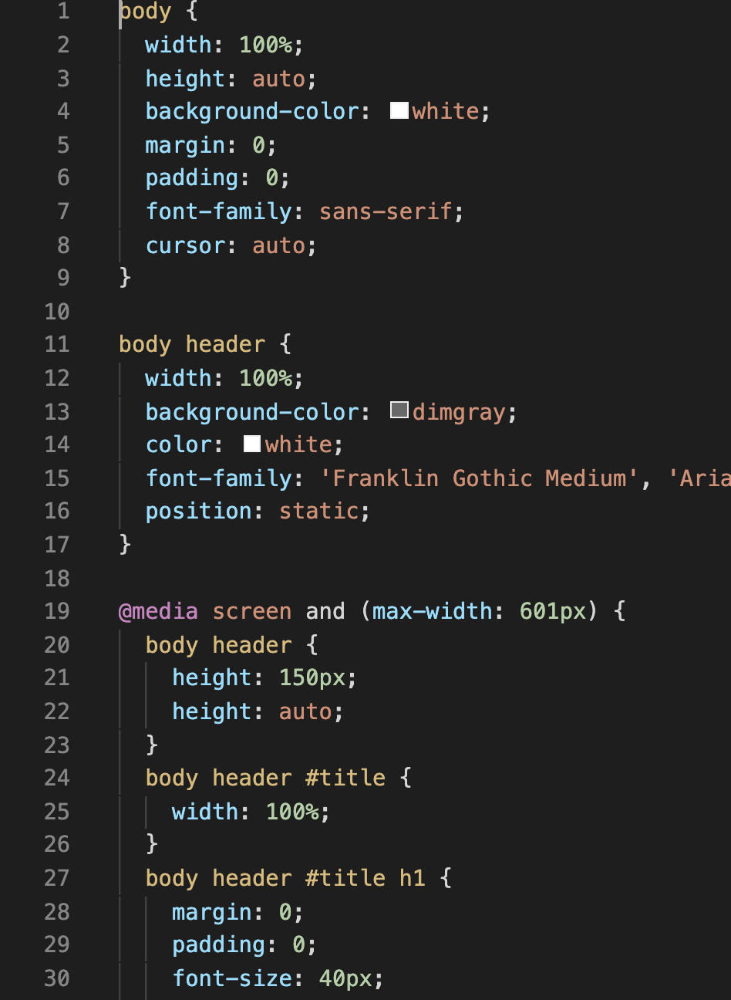
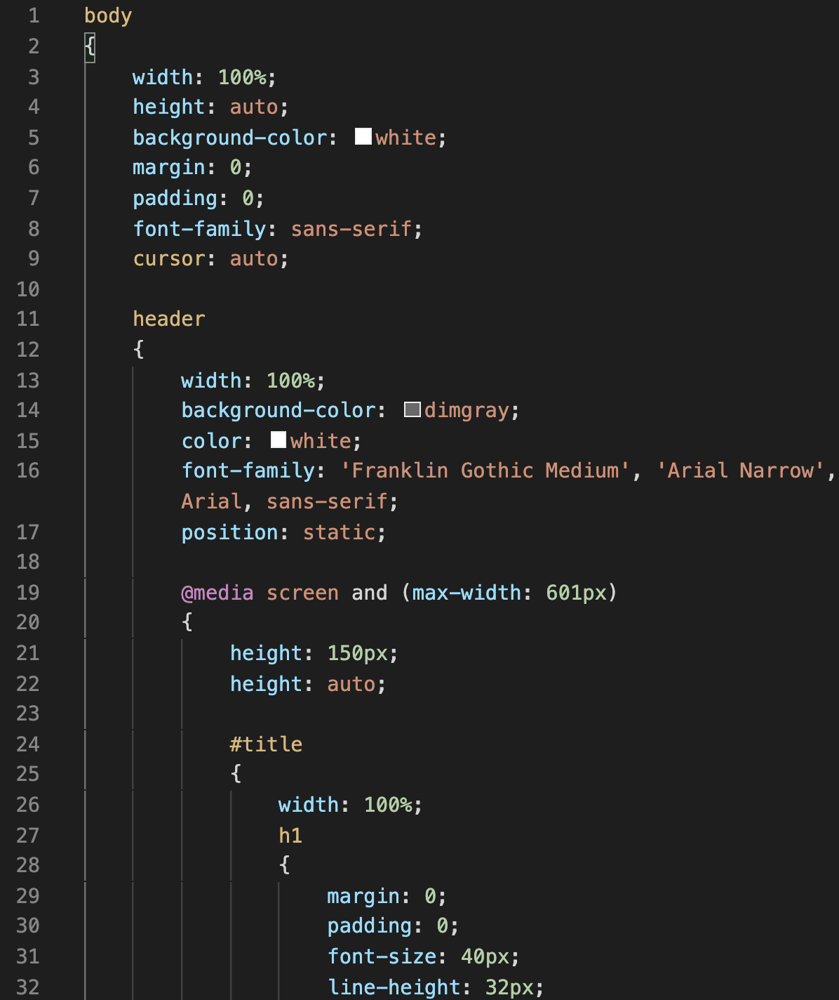
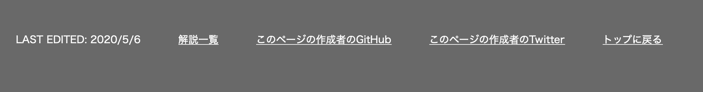

Stage 3 装飾のレイアウトを考える
前回まででサイトに書く文字はほぼほぼ出来上がりましたので、今回はサイトを飾っていきたいと思います。使うのは当然 css です。が、如何せんこの css 書きづらいんですわ。ご覧くださいよ、このいかにも非効率的な文体。
第一、最初の 30 行で body って 5 回も書いてますよ。全部まったく同じ意味です。しかもこれ、まだまだ body って書き続けるんです。そんなん嫌になりますよ。バグだって増えるに決まってる。こんなの絶対やりたくないですね。
そこで我々が使うのは、こんな困ったちゃんの css の悪いところをことごとくカバーしてくれる優しい言語、Sass です。この子の手にかかれば body なんて一発で済んじゃうんです。ご覧なさいよ、この美しく分かりやすいコードを。
絶対こっちの方がいいでしょ。こいつのおかげで私もう css には戻れません。ホント便利すぎる。まあ、css があまりにも不便というのが正しいんでしょうけど。
ただ Sass もやっぱりデメリットはあって、しっかり css ファイルに変換してあげないと HTML ファイルのフォーマットに合わないんですね。なので Sass から css に変換する機能はご自分のパソコンに搭載していただく必要があります。そんな高い買い物じゃないですよ。お金に関しては無料でできますし、巷に "Sass を css に変換" とか調べれば、やり方はいくらでも出てきます。そういうことは私のサイトでは他の方にお任せすることになっていますので、よろしくお願いします。
さあ、それではお手元に私の Sass ファイル stylesheet.scss をご用意ください。HTML もあるとなおよし。
目次
3-1 全体仕様
さて、Sass ファイルに入りますよ。なお、Sass のファイル名は何もしなければそのまま変換される css のファイル名になりますので、しっかり考えて名前をつけてあげましょう。
まず body でカッコを括ってしまいます。css だとめんどくさいから絶対こんなことしないでしょ。でも Sass ならほぼ手間になりませんからね。まず body 全体で幅はブラウザの横幅いっぱいを分捕ります。height プロパティは auto にしてコンピューターにお任せしましょう。背景 background-color は白、margin や padding は子要素で設定しますので 0 にしておきます。フォントも指定しておきます。cursor はお好みで。
さて、css ならここでカッコを閉じてもう一つカッコを書くところですが、Sass は body のカッコの中に子要素のスタイルを書き入れてしまいます。ほらね、惚れたでしょ。
3-2 レスポンシブデザインの書き方
スマホを持っていない人が今となっては珍しいくらい、掌サイズの端末でネットサーフィンする時代になりました。我々のサイトも例外ではありません。せっかくなんですから、パソコンだけでなく、出先でスマホからも眺めて欲しいじゃないですか。ということでデバイスに合わせてスタイルを変えていきますよ。
まずスクリーンの幅の最大値を w にしたい場合を考えてみましょう。このとき、
@media screen and (max-width: w) { ... }
という書き方になります。"..." の部分にはスクリーン幅が w 以下の時に適用させたいスタイルを書きます。
逆にスクリーンの最小値を w にしたいなら
@media screen and (min-width: w) { ... }
とします。最大と最小を両方セッティングしたいという欲しがりのあなたは
@media screen and (min-width: w) and (max-width: x) { ... }
とすればいいでしょう。
3-3 ヘッダータイトル
さて、ヘッダーに入りましょうか。まずヘッダー全体の仕様を決めていきます。幅は親要素の body に合わせ、背景には dimgray を使います。結構背景色が濃いので、文字の色は白にします。マージンやパディングはあるとダサいので 0 にしておきましょう。position と z-index は Stage 4 でお目にかかります。
さて、ここから先はレスポンシブデザインの方式でコーディングしますよ。まず画面が幅 600 px 以下の場合を書きます。height はここでは auto にはせず、px 単位でしっかり決めておきます。この数値はあとで書く h1 の値から考えて決めます。横幅が 600 px だとページジャンプのリンクを貼る余裕がないので、タイトルだけで贅沢に header の幅 100% を使ってしまいましょう。div につけた id が title でしたね。忘れたら必ず HTML ファイルに戻って確認してください。
その中の h1 について細かく設定します。まずは余白部分。このサイトでは余白を無くし、はちきれんばかりの詰め詰めでタイトルを入れようと思いますので、共に 0 にしてあります。フォントサイズより文字列の高さ (line-height) を小さくすることで、まさしくはちきれた感じを出すことができます。カーソルがデフォルト(何も指していないときの形)になっているのは、これを指定しないと text (文章にカーソルを当てたときの形)になるからです。
これと同じ作業を 601 〜 960 px でも、また 961 px 以上でも行います。margin や padding はやはりどの場合でも 0 ですが、line-height と font-size が異なってきます。当然、画面の横幅が広がるほどそれぞれ大きくなっていきます。それでも「はちきれんばかり」の趣向は変えないでくださいね。タイトルの見た目が違うとまったく別のサイトに来てしまったような感覚になりますから。
961 px 以上の場合は特段に注意が必要でしょうね。このときは他ページへジャンプするリンクを貼り付ける余裕がありますので、タイトルの右側につけたいと思っています。したがって #title の width は h1 に支障の出ない範囲内でできるだけ小さくしたい。そこで width に auto を設定しました。height は相変わらずパツパツに。余白はもちろん 0 で、そしてここで title に float: left; がつきました。これは後々リンクをまとめて float: right; にするための布石になっています。
3-4 ヘッダーリンク
さて、ヘッダーに入れるリンクのスタイルをデザインしましょう。全体として ul でまとまっていますので、ul 単位で指定していきます。まず 600 px 以下と 601 〜 960 px のときはリンクを見せないんでした。なので ul に display: none; (見せない)を設定しておきます。
一方画面の横幅が 961 px 以上のときはタイトルの右側に見せますので、まず float: right; ですね。ul 全体の横幅は子要素に合わせて機会が勝手に計算してくれる auto を使います。さて余白ですが、こいつらは別にはちきれんばかりに大きくてもしょうがないですし、何より画面の端スレスレにあるものはクリックしにくいじゃないですか。なのである程度の余白は用意しなければならないでしょう。その余白はできればヘッダーの中でも割と偏りのない位置がいい。それがこの margin の数値に現れています。padding も一緒にいじると収集つかなくなるので、マージンかパディングかのどちらか一方で何度か実験しながら余白の値を決めてください。
li に入ります。左側にはクソでかいタイトルがいますから、リンクはできるだけ右に寄せたいと思っています。そこで text-align を右に設定することで、ul の中で li を右寄せすることができます。加えて、ここでも float を設定してください。これを忘れるとリンクが横並びしません。list-style は none でいきましょう。ここはできるだけスッキリ見せたいので、余計なものは省きます。ここでも margin は実験して値を決めていますよ。
li の中でも a に注目します。普通、一度訪れたリンクを指すものは紫っぽく変色してしまうのですが、それだとどうも見栄えがよろしくないので、訪問歴によらず白くしたい。そこで color をここで white に再設定します。
知らない記号 & が出てきましたね。これは「自分を囲んでいる要素」を指します。具体的には、ここで &:hover を囲んでいる要素、a です。つまりこれは a:hover をひとつ外側の領域で書いたのと同じ効果をはっきします。スゴイでしょ。
また、a:hover という書き方自体をご存じない方に向けてご説明しますと、これは「a の上にカーソルが当てられたとき」という条件でのみ適用されるスタイルであることを表しています。下の :active は「a がクリックないしタップされたとき」です。それぞれ透明度を下げることで「あっ、ちゃんとホバー/クリックできているんだな」と、ユーザーを安心させることができます。試しにこれを入れないでホバーやクリックなどしてみてください。ちょっと不安になりますよ。
ここでもう一つ大事なお話。画面の横幅を 600 px と 970 px で場合分けしていますが、これは実際にコーディングしてみて「このくらいがちょうどいいかな」と思って決めた値です。これも実験の賜物ですね。ちなみに参考までに、およそ 600 px がスマホとタブレットの境界、1000 px ないくらいがタブレットとパソコンの境界と思ってください。当然 1000 px より横幅が大きいタブレットもありますし、うんと小さいパソコンだってありますよ。でも「目安」です。大体「これくらいでいいんじゃないかな」と当てずっぽうに数値入れても大して問題ありません。またブラウザの開発モードにはレスポンシブモードというのがあり、Chrome なら ctrl + shift + I, Safari なら ctrl + cmd + R で様々なデバイスに応じた開発ができるようになっています。
3-5 セクション一般
さて、main 部分に入りましょう。私のコードでその前にあるのは Stage 4 でちゃんと扱いますのでご心配なく。まず main の幅は body 全域を使ってしまいます。「余白が欲しい」とおもうでしょうけど、それは各セクションに任せればいいじゃないですか。
その各セクションの設定へすぐに移りますよ。高さはコンピューターに自動で計算してもらいます。文字の色は白の背景によくあう黒、そして padding を変な数値で決めていますよね。何度も申しますが、余白は実験して決めるものです。「これくらいにしたらちょうどいいかな」とテキトーに数を入れてみて、プレビューを眺めて納得がいくまでいじり続ける。そうしなくていい方法があるなら私が知りたいくらいです。
さあ、レスポンシブいきますよ。今回は 600 px だけで場合分けします。600 より小さいときはスマホを想定しています。見栄えがいい「ド真ん中」に文章を置くのが好ましいでしょう。そのため余白は左右対象にしています。ここでポイントになるのが、決して px 単位で余白を決めないこと。これを意識するだけで画面サイズが変わっても同じように見えますよ。また横幅 70% というのもちょうどいい大きさですね。600 より大きいときは少し左寄りにします。パソコンなんかはド真ん中にあるより少し左によっていた方が読みやすいんですよね。試してみてください。左右の空白を揃えてしまうと「なんか違うな」となると思います。横幅の比率がスマホの時より小さいのは、文章を読んでいるときにあまり視線を変えなくて済むからです。70% もあると目があっちへ行ったりこっちへ行ったりと忙しくなりますので、想像以上に疲れます。できるだけ快適に文字を読めるようにしてあげるのも、我々の務めです。
さて、今度は要素の種類ごとに設定をしていきます。まず一番多用する p から。こいつは空白の入れ方を設定してあげれば十分でしょう。このときも margin か padding どちらか一方をいじってください。
stress クラスに移ります。先にどういう風になるかみておきましょうか。
こうです。
まず色はいかにも「強調」って感じがする赤を、フォントは太く (bold) して、サイズも少し大きめにします。段落を変えていますので、多少大きくなっただけでも「こうかは ばつぐんだ」また文自体も中央に寄せましょう。
次はコードを別段落に書く code クラスです。文字の大きさが統一され
text-align: center;
という具合になります。
text-align: center;
と比べてみてください。i とかもうちょい間隔開けろって思う人もいるでしょうね。
次が a 要素です。タイトル右のリンクとほぼ同じです。唯一違うのは色が blue に指定されただけ。これで一度訪れたリンクであっても紫に変色することもありません。
その次が img です。写真を見せるときに使うものでしたね。ポイントは margin を p よりやや多めにとること。まったく同じだと「ちょっと主張しすぎかな」という印象を与えてしまいます。
3-6 目次セクション
今この解説と同時並行でコーディングされている方は一度目次のところをご覧ください。リストの各項目の先頭に黒い点がついてるじゃないですか。見栄え悪いと思いません？なんかリンクの青色に合わないなという感じがしてしょうがないんですよね。なので index クラスのリストからこの黒点を消します。list-style: none; です。またこのままだと行間が狭すぎてスマホの人が思い通りにリンクをタップしづらいので、幅が狭いときは各要素の間を少し開けます。チマチマしたところにリンクがひしめき合っていて、しかも押し間違えたときの腹立たしさったらないでしょ？これは絶対に対策しとかなければいけません。ここでは余白を使うのではなく line-height つまり一行の高さを調節しましょう。これも実験して「これぐらいあれば押し間違えることはないかな」というところまで広げてください。960 px より大きい場合はカーソルがいるデバイスが大半であることを期待して、操作しなくても構いません。
一方 index クラスでない場合のリストは list-style を四角くしてあげたらいいんじゃないかなと。ここはもう皆さんの好みです。すべて丸投げします。
さて、2-3 で疑問を残しておいたことを覚えていらっしゃるでしょうか。「なぜ section 内の ul を p の中に入れるか」でしたね。試しに入れないで HTML 書いてみてください。何か変じゃないですか。「なんで文章よりリストがしゃしゃり出てんだ」ってなりません？これね、余白の設定がめんどくさいからこうしてるんですよ。もし p の内側に入れなかったら「p より前に出ないでちょうどいい位置に来るには margin と padding どうしたらいいかな」ってずっと実験を繰り返すの面倒でしょうがないんですよ。それに比べて p の中に予め入れてしまえば、本文よりリストが前に出ることはないんですから、余白の設定が簡単になるんです。たったそれだけ。
3-7 フッター
さて、とうとうフッターまで来ました。ここには ul しかいませんから、作業がしやすいと言えばしやすいですね。まずはイメージを共有しておきましょう。最初にやりたいと思っている形はこうです。
ただご覧の通り、横幅が狭いと両端が詰まってしまいます。そのときのダサいことと言ったら目も当てられませんよ。そこで「これ以上横幅狭くなるとマズいな」となったらこちらへ切り替えます。
こっちはスッキリしてていいでしょ。これを作っていきます。境界は相変わらず実験してください。これはしょうがない。
ではコーディングしましょう。余白は実験してちょうどいいところに。padding を入れているのは 0 にしてバグったからです。今は改善されているかもしれないので、試してみてください。色はヘッダーと統一します。
横幅の場合分け、最初は狭すぎてリストを横並べできない場合です。ポイントは height を決めてしまうこと。auto にしても悪くはないのでしょうけども、やっぱししっかり決めた方が安全かなと。リストスタイルはリンク前に何か変な点があるとみっともないので none にします。文字列は中央寄せ。各リストでも中央寄せしてください。a はヘッダーとまったく同じ仕様です。
横幅が広いときも高さを指定しておきます。ul 全体では中央寄りが綺麗かな。li は float: left; を忘れると縦並びになります。a を設定したら終了です。お疲れ様でした。
次回予告
皆さん「これでおしまいだー」と肩を伸ばしていることでしょう。それでいいんですよ。いいんですが、ちょっとスマホになったとき「他のページに移れない」というのは想像以上に不便です。しかしヘッダーにはリンクを貼る場所がない。普段はリンクを使わないので小さくしまっておきたい。でもいざ使うときは取り出してしっかり大きい画面で見たい。これをすべてかなえる手法を次回、とりあげます。「え？これ Javascript 使わないの？」と驚くことになるでしょうけれども、まあ楽しみにしていてください。